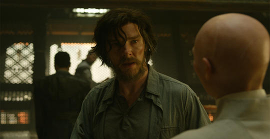
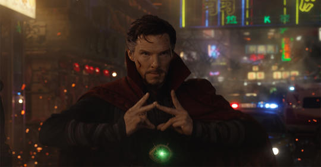
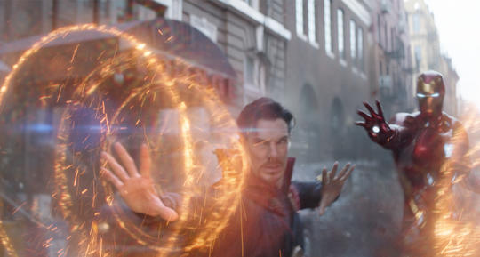
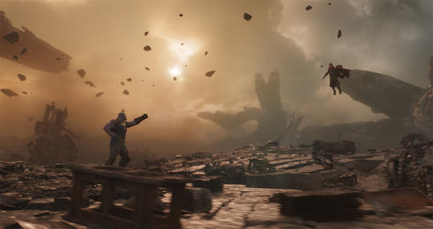
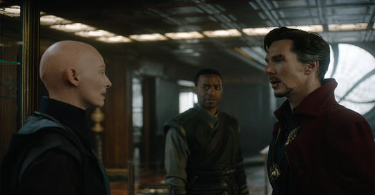
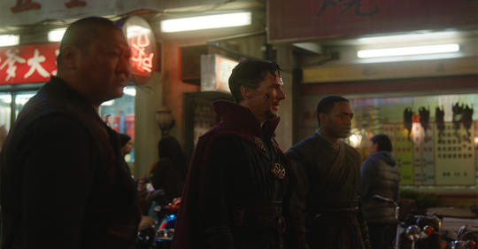
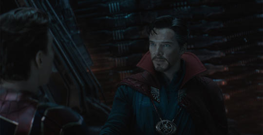
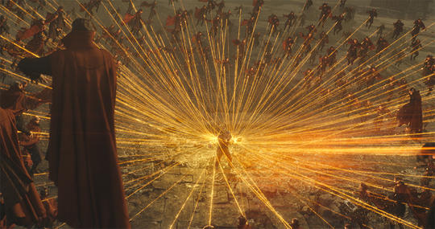

Una vez fue un cirujano brillante pero egoísta. Después de que un accidente automovilístico dañara gravemente sus manos y obstaculiza su capacidad para realizar una cirugía, busca una forma de repararlas encontrándose con el Anciano. Después de convertirse en uno de los alumnos del Hechicero Supremo, se convierte en un practicante tanto de las artes místicas como de las artes marciales. Además de conocer muchos hechizos poderosos, tiene un traje con dos objetos místicos: la Capa de Levitación y el Ojo de Agamotto, que le otorgan poderes adicionales. Strange es ayudado en el camino por su amigo y sirviente, Wong, y una gran variedad de objetos místicos. Toma residencia en una mansión llamada Sanctum Sanctorum,ubicado en la ciudad de Nueva York. Más tarde, Strange toma el título de Hechicero Supremo. Lo ha llevado a entrar en conflicto con sus compañeros héroes y otros.
El vanidoso y egoísta cirujano Stephen Strange perdió el uso de sus manos en un horrible accidente automovilístico causado por su propia imprudencia.A su vez, perdió su fortuna a través de una serie de cirugías y terapias costosas, complicadas y experimentales en un intento por salvar su medio de vida.Al final, desamparado y desesperado, buscó una cura lejos de los caminos trillados de la medicina moderna. En Nepal, después de ser salvado de los atracadores por el poderoso hechicero Mordo, Strange conoció a la persona que le había enseñado a Mordo, el Hechicero Supremo de la Tierra, el Antiguo, que tenía muchos misterios del Viejo Mundo, incluido el potencial de curar las manos de Strange.El Anciano se negó a guiar a Strange a través del proceso hasta que renunció a su egoísmo y abrió su mente a una verdad superior.Una vez hecho esto, el médico comenzó a aprender sobre el Multiverso y la antigua ciencia de la magia, así como sobre el conocimiento prohibido que el Anciano no estaba dispuesto a compartir. de Nueva York. Más tarde, Strange toma el título de Hechicero Supremo. Lo ha llevado a entrar en conflicto con sus compañeros héroes y otros.
Un maestro de las artes místicas, Doctor Strange tiene habilidades mágicas fenomenalmente poderosas que le permiten conjurar hábilmente innumerables hechizos. Strange ha podido usar sus hechizos para unir oponentes y crear escudos y barreras complejos, entre muchos otros usos tanto para la defensa como para el ataque. Strange también es experto en la proyección astral, enviando su yo astral lejos de su cuerpo y permitiéndole observar eventos sin el conocimiento de los presentes. Strange descubre que ciertos artefactos pueden reforzar los hechizos mágicos y extender sus beneficios. En el Santuario de Nueva York, es adoptado por la Capa de Levitación, una capa aparentemente sensible que no solo lo protege, sino que también lucha por él. El doctor también hace uso de Sling Rings para crear portales para cruzar grandes distancias y entrar en otros reinos. Podría decirse que el Ojo de Agamotto proporciona la mayor fuente de poder para Strange. En verdad, la Piedra del Infinito conocida como la Piedra del Tiempo, el Ojo posee la habilidad incalculable de controlar el tiempo mismo. Con él, Strange puede alterar el tiempo alrededor de objetos, ubicaciones u otros seres, avanzando y retrocediendo a lo largo de su existencia. También se puede usar para atrapar enemigos en ciclos de tiempo, así como para darle a Strange la capacidad de mirar hacia el futuro potencial.
Strange acelera su aprendizaje místico al dominar el uso de su forma astral, pero a medida que se sumerge más profundamente en la magia, se encuentra con Kaecilius, un antiguo alumno del Primigenio y discípulo de Dormammu, una poderosa entidad de la Dimensión Oscura. Aunque todavía es un novato relativo, Strange se opone a Kaecilius y sus seguidores cuando revelan sus planes de traer a Dormammu a la Tierra para su destrucción total. Al mismo tiempo, Strange también se entera de la jerarquía mágica de la Tierra, incluido un trío de Santuarios colocados alrededor del mundo y supervisados por Maestros para proteger el planeta de las amenazas mágicas. Más tarde, Thanos y su misión de adquirir las seis Infinity Stones representan una amenaza directa para Strange y la Time Stone en su poder, poniendo a Strange en conflicto con los seguidores de Thanos, Ebony Maw y Cull Obsidian también.
En su lucha con Kaecilius y Dormammu, Strange se ve ayudado por Mordo, otro estudiante consumado del Primigenio, y Wong, un Maestro que vigilaba la biblioteca del Primigenio en Nepal. Mordo demuestra ser un aliado incondicional hasta que es testigo del uso de la magia por parte de su maestra que ella misma había prohibido y pierde la fe en su guía. Después de la derrota de Dormammu por parte de Strange, Wong viaja con él a un Sanctum en la ciudad de Nueva York para estar a su lado en los tiempos inciertos que se avecinan. El Anciano cae debido a la traición de Kaecilius, y aunque usó magia oscura para promover la causa del bien, muere instando a Stephen Strange a continuar sus estudios mágicos y convertirse en un campeón de la Tierra. La doctora Christine Palmer y Strange una vez salieron, y ella le ofrece ayuda y consuelo a raíz de su accidente, solo para ser rechazada por él en su punto más oscuro. Él se preocupa por ella y confía en ella, ya que más tarde, Strange busca su experiencia médica cuando él mismo, y más tarde el Primigenio, resultan heridos durante sus batallas. También le revela sus habilidades mágicas y se disculpa por cómo había actuado una vez. Dejando a un lado algunos egos en duelo, en la posición contra Thanos, Strange encuentra apoyo y ayuda en Tony Stark, también conocido como Iron Man, Bruce Banner y Peter Parker, también conocido como Spider-Man. Strange también lucha junto a los miembros de Guardianes de la Galaxia Star-Lord, Drax, Mantis y su enemigo convertido en aliado, Nebula.
Después de sus meses de entrenamiento en el complejo del Anciano en Nepal, Strange entró en una serie de escaramuzas con Kaecilius, el agente de Dormammu en la Tierra, y sus seguidores. Esto incluyó una invasión del Sanctum de Nueva York, donde Strange fue testigo de la muerte del guardián de ese Sanctum a manos de Kaecilius. Durante la pelea que siguió, Strange sería salvado por la Capa de Levitación, pero fue gravemente herido por el seguidor de Kaecilius, Lucian. Strange se transportó al Hospital Metro-General, donde reclutó a Christine Palmer para operarlo mientras simultáneamente luchaba contra Lucian en el Plano Astral, y reveló su Proyección Astral y sus nuevas habilidades mágicas a Christine en el proceso. A raíz de esto, Strange se arrepintió de haber tenido que matar a Lucian para sobrevivir a su batalla, mientras se enteró del Anciano de que era el nuevo Maestro del Sanctum de Nueva York.
En medio de esto, Strange se enfrentó al Anciano por su descubrimiento de su uso secreto de la esencia de la Dimensión Oscura para prolongar su vida, algo que Mordo se negó a creer hasta que el Anciano misma lo confirmó cuando el trío luchó contra Kaecilius en la Dimensión Espejo. Cuando el Anciano fue herido de muerte durante otro enfrentamiento con Kaecilius, Strange, aunque no pudo operar por sí mismo debido a sus manos heridas, ayudó a Christine Palmer y al Doctor Nicodemus West en sus intentos de salvarla, pero ella sucumbió a sus heridas. Antes de que el Anciano muriera, ella habló con Strange en el Plano Astral, diciéndole que veía infinitas posibilidades para su futuro y que si bien él podía curar sus manos y regresar a su vida como cirujano, tenía el potencial para mucho más. Armado con el Ojo de Agamotto, la Capa de Levitación y su creciente conocimiento y habilidades místicas, Strange, junto con Mordo y Wong, intentaron evitar que Kaecilius destruyera el Santuario de Hong Kong, usando el Ojo de Agamotto para revertir el tiempo cuando Kaecilius fue exitoso.
Con el formidable poder de Kaecilius permitiéndole subvertir continuamente los intentos de Strange por detenerlo, Strange llevó la pelea directamente a Dormammu. Enfrentando a la poderosa entidad en su propia Dimensión Oscura, el doctor puso en práctica una astuta estratagema utilizando los poderes de deformación del tiempo del Ojo para atrapar a Dormammu y a él mismo en un bucle temporal. Esto obligó a Dormammu a retirarse y abandonar sus planes para anexar la Tierra a sus posesiones dimensionales, y llevarse a Kaecilius y sus seguidores con él en el proceso. Sin embargo, Mordo, desilusionado por lo que aprendió sobre el Anciano antes de morir, se fue para caminar por su propio camino. De vuelta en el Sanctum de Nueva York en el que ahora era Maestro, Strange, con la ayuda de Wong, se dedicó a aprender todo lo que pudo para contribuir a su nueva posición como Maestro de las Artes Místicas de la Tierra. Esto incluyó hacer un seguimiento de los visitantes de otro mundo al planeta y, si es posible, su propósito allí. Esta misión lo puso en contacto con Thor y su hermano Loki cuando buscaron a su padre Odin en la Tierra, una búsqueda a la que Strange pudo brindar algo de ayuda, enviándolos al lado de su padre. Más tarde, Doctor Strange solicitó la ayuda de Tony Stark después de que Hulk se estrellara contra el Sanctum de Nueva York. Habiéndose transformado de nuevo en Bruce Banner, informó al Doctor Strange sobre el impulso acelerado del temido tirano Thanos para recolectar las seis Infinity Stones, incluida la Time Stone alojada en el Ojo de Agamotto. Strange y Stark se desagradaron de inmediato, pero cuando los lacayos de Thanos llegaron a la ciudad, los dos hombres, junto con Wong y Spider-Man, lucharon uno al lado del otro para bloquear la marcha de destrucción de los alienígenas. A pesar de su fuerte oposición, Strange fue capturado y trasladado a la nave espacial de los extraterrestres, aunque tanto Iron Man como Spider-Man pudieron colarse en la nave antes de que abandonara la atmósfera de la Tierra.
Los propios hechizos protectores de Strange evitaron que el Ojo fuera agarrado y abierto, lo que llevó al seguidor de Thanos, Ebony Maw, a torturar a Stephen para hacer que levantara el hechizo. Rescatado por Iron Man y Spider-Man de las garras de Maw, Strange viajó con sus nuevos aliados al mundo natal de Thanos, Titán, advirtiendo a Stark que no dudaría en sacrificar a Stark o Parker si eso significaba proteger la Piedra del Tiempo. En Titán, el trío conoció a varios miembros de los Guardianes de la Galaxia y el grupo combinado elaboró un plan para asaltar a Thanos a su llegada. Además, el médico usó la Piedra del Tiempo para observar muchos millones de posibles resultados de su conflicto con Thanos, pero solo uno mostró que lograron la victoria. Cuando Thanos llegó, el intento del grupo de quitarle el Infinity Gauntlet de su mano falló, y Thanos, que poseía cuatro de las seis Infinity Stones, opuso una fuerte resistencia a la magia de Strange. Cuando Iron Man fue derrotado en batalla por Thanos y estaba a punto de morir, Strange lo detuvo, sacrificando el Ojo de Agamotto al señor de la guerra alienígena para salvar la vida de Stark, a pesar de las protestas de Stark. Con la Gema del Tiempo en su poder, Thanos dejó a Titán para viajar a la Tierra y asegurar la última Gema del Infinito restante que buscaba. Su éxito en el esfuerzo pronto fue evidente para los héroes que todavía estaban en Titán cuando muchos de ellos, junto con la mitad de toda la vida en todo el universo, comenzaron a desmoronarse. Cuando el Doctor Strange sintió que comenzaba a desintegrarse en la nada, consoló a Tony Stark sobre el sacrificio que había hecho y le explicó que "no había otra manera".
